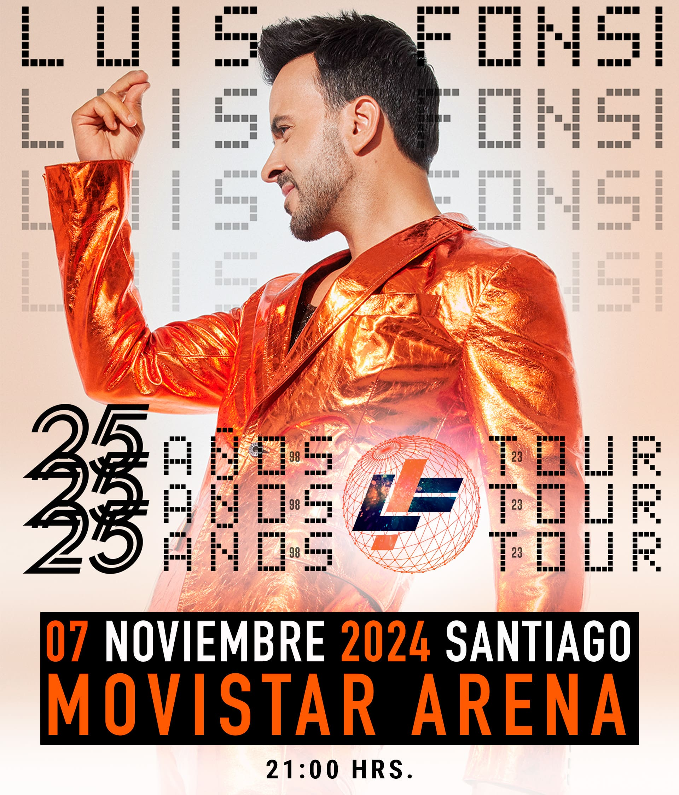
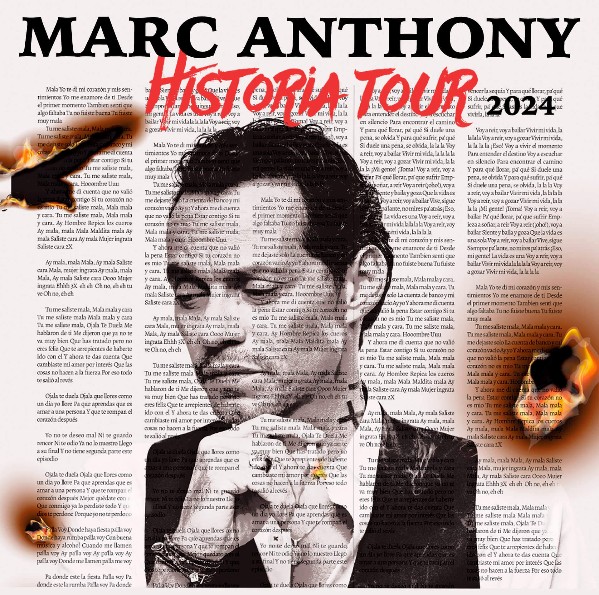
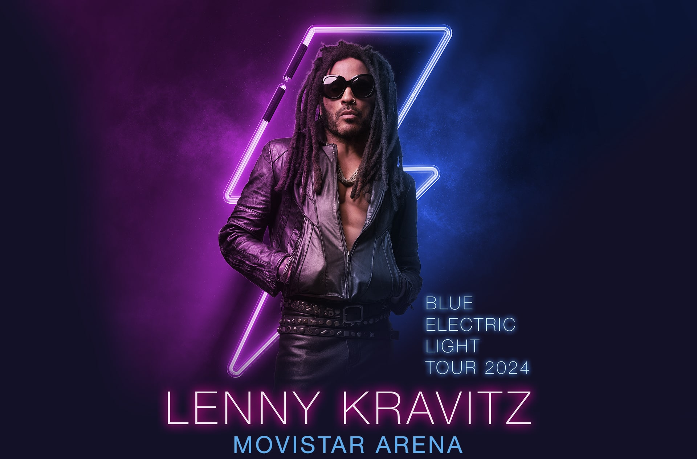
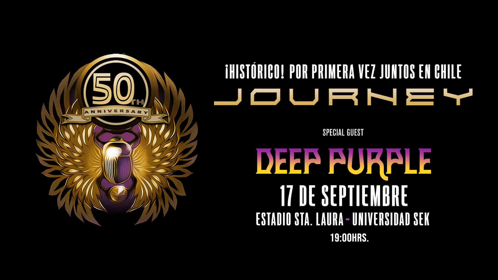

Ticketazo!

Luis Fonsi
25 Años Tour
¡Atención Chile! Luis Fonsi vuelve a nuestro país, y esta vez lo hace con una gran e imperdible fiesta: celebrará sus 25 años de carrera.
Comprar

Marc Anthony
Historia tour 2024
La gran estrella de la salsa Marc Anthony regresa a Chile para mostrar todo su repertorio clásico
y sus nuevas canciones en un nuevo concierto que se llevará a cabo el lunes 23 y martes 24 de septiembre en el Movistar Arena.
Comprar

Lenny Kravitz
Blue Electric Light Tour 2024
El legendario músico estadounidense Lenny Kravitz, reconocido por grandes clásicos como Are You Gonna Go My Way, Again, I Belong To You,
It Ain’t Over Till It’s Over, Fly Away, American Woman, entre otros, confirma su regreso a Chile el próximo 4 de diciembre en Movistar
Arena en el marco de la gira mundial ‘Blue Electric Light Tour 2024'.
Comprar

Journey
+ Deep Purple
Este próximo 𝟭𝟳 𝗱𝗲 𝘀𝗲𝗽𝘁𝗶𝗲𝗺𝗯𝗿𝗲 en el 𝗘𝘀𝘁𝗮𝗱𝗶𝗼 𝗦𝗮𝗻𝘁𝗮 𝗟𝗮𝘂𝗿𝗮, sé parte de una noche que, sin duda,
quedará grabada a fuego en tu memoria. Una irrepetible oportunidad de escuchar himnos del rock como
"Separate Ways", "Lights", "Don't Stop Believin'" y tantos otros✨
Comprar